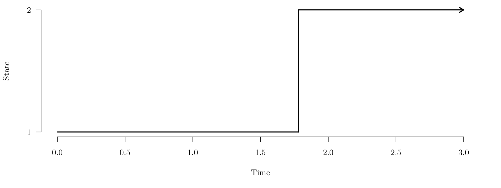

Survival Models (MATH3085/6143)
Chapter 8: Multistate Survival Models
30/10/2025
Recap
In the last chapter, we
Defined the semi-parametric Cox PH model, where covariates multiply the baseline hazard \(h_0(t)\)
Established that the regression parameters \(\boldsymbol{\beta}\) are estimated by maximising the partial likelihood, which conditions out the unknown baseline hazard.
Introduced Accelerated Failure Time (AFT) models as the fully parametric alternative where covariates shrink or stretch the time axis.
Chapter 8: Multistate Survival Models
Introduction
In Chapters 1 to 7, we have assumed that survival (time-to-failure) of each unit is an observation of a random variable \(T\), and our survival models have been stochastic (probability) models describing the distribution of \(T\).
An alternative approach is to model the variable \(Y_t\) representing the status (alive or dead) of a unit at time \(t\).
Introduction
A probability model for a time-indexed variable (one which changes over time) is a stochastic process.
survival is a simple stochastic process where, at time \(t=0\), \(Y_0=1\) (alive) and then the process remains in state \(1\) unless at some value of \(t\) a transition to \(Y_t=2\) (dead) is made after which the process remains in state \(2\).
State space (Gap on page 82)
The set of possible values that a stochastic process \(Y_t\) can take over time \(t\) is called its state space, \(S\).
In the simple survival model \(S=\{\mbox{alive},\mbox{dead}\}\) or \(S=\{1,2\}\).
This is an example of a discrete state space, and in this module we will restrict consideration to discrete state spaces with a small number of possible states.
The simple survival state space can be represented as

The arrow indicates that transition is possible only in one direction.
In this case the state \(\mbox{dead}\) is called an absorbing state.
Multi-state models (Gap on page 83)
Stochastic processes allow us to model richer survival time processes than simply two-state \(\{\text{alive}, ~\text{dead}\}\) processes with an absorbing (\(\text{dead}\)) state.
Two such examples are:
General two-state model (no absorbing states)
Multiple decrement (absorbing state) model
Markov processes
A Markov process model for \(Y_t\) is one where the future is conditionally independent of the history of the process given the current state. For example, tomorrow’s weather only depends on today’s weather, and is independent on all weather before today.
Hence, a Markov process can be specified by transition probabilities \[ \mathbb{P}(Y_{x+t}=j\,|\,Y_x=i)\;\equiv\;p_{ij}(x,t),\quad j\in S \] for any present time \(x\), future time \(x+t\) and present state \(i\). This makes explicit that the probability, at time \(x\), of future realisations of the process depends only on the current state \(Y_x\), and not on the history of \(Y\) (its values in the period \([0,t)\)).
For a time-homogeneous Markov process, the transition probabilities do not depend on the value of \(x\), so we can write \[ P(Y_{x+t}=j\,|\,Y_x=i)\;=\;p_{ij}(t). \]
Transition intensity (Gap on page 84)
The transition intensity function \(\mu_{ij}(x)\) is defined as
\[ \mu_{ij}(x)=\lim_{\delta t\to 0} \frac{p_{ij}(x,\delta t)}{\delta t}, \qquad i\ne j. \]It follows that
\[ p_{ij}(x,\delta t)=\mu_{ij}(x)\delta t +o(\delta t), \qquad i\ne j. \]We define
\[ \mu_{ii}(x)=-\sum_{j\ne i} \mu_{ij}(x), \]so that
\[ p_{ii}(x,\delta t)=1+\mu_{ii}(x) \cdot \delta t +o(\delta t), \qquad i\ne j. \]
For any transition \(i \to j\) which is prohibited (e.g. \(\mbox{dead}\to\mbox{alive}\)), we have \(\mu_{ij}=0\).
For a homogenous process, transition intensity \(\mu_{ij}(x)\) does not depend on \(x\), i.e. it is written \(\mu_{ij}\).
Chapman-Kolmogorov equations: solving a Markov process for \(p_{ij}(x,t)\)
The transition intensity function \(\mu_{ij}(x)\) (or just \(\mu_{ij}\) for a time-homogeneous process) provides an efficient representation of the process.
How are the transition probabilities \(p_{ij}(x,t)\) obtained from the transition intensities \(\mu_{ij}(x)\)?
We need to derive the Kolmogorov forward equations, the solution to which are the required transition probabilities \(p_{ij}(x,t)\).
Chapman-Kolmogorov equations: solving a Markov process for \(p_{ij}(x,t)\) (Gap on page 85)
For any times \(x,s,t\ge 0\) and states \(i,j,k\in S\), we have
\[ \begin{eqnarray*} \mathbb{P}(Y_{x+s+t}=j,Y_{x+s}=k\,|\,Y_x=i)&&\\ &&\hspace{-50mm}=\mathbb{P}(Y_{x+s+t}=j\,|\,Y_{x+s}=k,Y_x=i) \cdot \mathbb{P}(Y_{x+s}=k\,|\,Y_x=i)\\ &&\hspace{-50mm}=\mathbb{P}(Y_{x+s+t}=j\,|\,Y_{x+s}=k) \cdot \mathbb{P}(Y_{x+s}=k\,|\,Y_x=i), \\ \end{eqnarray*} \]
Hence
\[ \begin{eqnarray*} \mathbb{P}(Y_{x+s+t}=j\,|\,Y_x=i)&&\\ &&\hspace{-20mm}=\sum_{k\in S} \mathbb{P}(Y_{x+s+t}=j,Y_{x+s}=k\,|\,Y_x=i)\\ &&\hspace{-20mm}=\sum_{k\in S} \mathbb{P}(Y_{x+s+t}=j\,|\,Y_{x+s}=k) \cdot \mathbb{P}(Y_{x+s}=k\,|\,Y_x=i), \\ \end{eqnarray*} \]
or
\[ p_{ij}(x,s+t)=\sum_{k\in S} p_{ik}(x,s)p_{kj}(x+s,t), \qquad i,j\in S. \]
These are the Chapman-Kolmogorov equation.
Chapman-Kolmogorov equations: solving a Markov process for \(p_{ij}(x,t)\) (Gap on page 86)
Suppose that there are \(m\) states in \(S\), labelled \(1,\cdots ,m\).
For a Markov process, we define the transition matrix between times \(x\) and \(x+t\) to be the matrix \[ \text{P}(x,t)=\left( \begin{array} {cccc} p_{11}(x,t)&p_{12}(x,t)&\cdots&p_{1m}(x,t)\\ p_{21}(x,t)&p_{22}(x,t)&\cdots&p_{2m}(x,t)\\ \vdots&\vdots&&\vdots\\ p_{m1}(x,t)&p_{m2}(x,t)&\cdots&p_{mm}(x,t) \end{array} \right) \]
The Chapman-Kolmogorov equations can be written as \[ \mathbb{P}(x,s+t)=\mathbb{P}(x,s)\cdot \mathbb{P}(x+s,t) \]
For a time-homogeneous process, we can drop the first argument \(x\) in the above.
Chapman-Kolmogorov equations: solving a Markov process for \(p_{ij}(x,t)\) (Gap on page 87)
The Chapman-Kolmogorov equations give \[ p_{ij}(x,t+\delta t)=\sum_{k\in S} p_{ik}(x,t)p_{kj}(x+t,\delta t)\qquad i,j\in S \] which implies that \[ \begin{eqnarray*} \frac{p_{ij}(x,t+\delta t)-p_{ij}(x,t)}{\delta t}&&\\ &&\hspace{-20mm}=\sum_{k\in S} p_{ik}(x,t) \cdot \frac{p_{kj}(x+t,\delta t)}{\delta t}-\frac{p_{ij}(x,t)}{\delta t} \\ &&\hspace{-20mm}=\sum_{k\ne j} p_{ik}(x,t) \cdot \frac{p_{kj}(x+t,\delta t)}{\delta t}-p_{ij}(x,t) \cdot \frac{1-p_{jj}(x+t, \delta t)}{\delta t}. \\ \end{eqnarray*} \]
Chapman-Kolmogorov equations: solving a Markov process for \(p_{ij}(x,t)\) (Gap on page 88)
In the limit \(\delta t\to 0\), we have \[ \begin{eqnarray*} \frac{d}{dt} p_{ij}(x,t)&=& \sum_{k\ne j} p_{ik}(x,t)\mu_{kj}(x+t)+p_{ij}(x,t) \cdot \mu_{jj}(x+t) \\ &=& \sum_{k\in S} p_{ik}(x,t) \cdot \mu_{kj}(x+t), \qquad i,j\in S\\ \end{eqnarray*} \] These are the Kolmogorov forward equations, which are a set of differential equations for \(p_{ij}(x,t)\)
They can be written in matrix form as \(\frac{d}{dt} \text{P}(x,t)= \text{P}(x,t) \cdot \text{M}(x+t)\), where \(\text{M}(x)\) is the transition intensity matrix \[ \text{M}(x)=\left( \begin{array} {cccc} \mu_{11}(x)&\mu_{12}(x)&\cdots&\mu_{1m}(x)\\ \mu_{21}(x)&\mu_{22}(x)&\cdots&\mu_{2m}(x)\\ \vdots&\vdots&&\vdots\\ \mu_{m1}(x)&\mu_{m2}(x)&\cdots&\mu_{mm}(x) \end{array} \right). \]
The holding time distribution (Gap on page 89)
Consider a unit in state \(i\) at time \(x\). The holding time \(T_{xi}\) is the random variable indicating the length of the time interval between \(x\) and the next transition to any other state.
We have \[ \begin{eqnarray*} \mathbb{P}(T_{xi}\le t+\delta t\,|\,T_{xi}\ge t)&=& \mathbb{P}(Y_{x+t+\delta t}\ne i \,|\,Y_{[x,x+t]}=i)\\ &=&1-\mathbb{P}(Y_{x+t+\delta t}= i \,|\,Y_{x+t}=i) \end{eqnarray*} \] and, therefore, \[ \frac{\mathbb{P}(T_{xi}\le t+\delta t\,|\,T_{xi}\ge t)}{\delta t}= \frac{1-\mathbb{P}(Y_{x+t+\delta t}= i \,|\,Y_{x+t}=i)}{\delta t} \] Taking the limit as \(\delta t\to 0\), we have \[ h_{xi}(t)=-\mu_{ii}(x+t)=\sum_{i\ne j} \mu_{ij}(x+t), \] where \(h_{xi}\) is the hazard function for the holding time variable \(T_{xi}\).
The holding time distribution (Gap on page 89)
The hazard function \(h_{xi}(t)\) can be transformed to a survival function in the usual way, so we have \[ \begin{eqnarray*} S_{xi}(t)=\exp\left( -\int_0^t h_{xi}(t) \mathrm{d}t \right) &=& \exp\left( \int_0^t \mu_{ii}(x+t)\mathrm{d}t \right) \\ &=& \exp\left( -\int_0^t \sum_{i\ne j} \mu_{ij}(x+t)\mathrm{d}t \right) \end{eqnarray*} \]
For a time-homogeneous Markov process, all \(\mu_{ij}(x)\) are constant (independent of \(x\)) so we have \(h_{xi}(t)=-\mu_{ii}=\sum_{j\ne i} \mu_{ij}\), a constant hazard. Hence, \[ S_{xi}(t)= \exp\left( \mu_{ii} t \right)= \exp\left( -t \sum_{j\ne i} \mu_{ij}\right) \] and the holding time distribution is exponential, with rate \(\sum_{i\ne j} \mu_{ij}\).
Conditional transition probability (Gap on page 90)
Conditional on a transition being made from state \(i\) at time \(x+t\), what is the probability that transition is made to state \(j\) for each \(j\ne i\)?
\[ \begin{eqnarray*} &&\mathbb{P}(\mbox{transition from $i$ to $j$ at $x+t$}\;|\;\mbox{transition from $i$ at $x+t$})\\[3pt] &&\qquad= \lim_{\delta t\to 0} \mathbb{P}(Y_{x+t+\delta t}=j\;|\;Y_{x+t+\delta t}\ne i \mbox{ and } Y_{x+t}=i)\\[3pt] &&\qquad= \lim_{\delta t\to 0} \frac{\mathbb{P}(Y_{x+t+\delta t}=j\;|\;Y_{x+t}= i )} {\mathbb{P}(Y_{x+t+\delta t}\ne i\;|\; Y_{x+t}=i)}\\[3pt] &&\qquad= \lim_{\delta t\to 0} \frac{\mu_{ij}(x+t)\delta t+o(\delta t)} {\sum_{k\ne i}\mu_{ik}(x+t)\delta t+o(\delta t)}\\[3pt] &&\qquad= \frac{\mu_{ij}(x+t)} {\sum_{k\ne i}\mu_{ik}(x+t)} \end{eqnarray*} \]
For a time-homogeneous Markov process, all \(\mu_{ij}(x)\) are constant (independent of \(x\)) so this becomes \(\frac{\mu_{ij}}{\sum_{k\ne i}\mu_{ik}}\).
Two-state model (absorbing state) (Gap on page 91)
Any two-state process is determined by the transition intensities between the two states, \(\mu_{12}(x)\) and \(\mu_{21}(x)\).
As state 2 is absorbing, \[
p_{21}(x,t)=0, \quad \mbox{for all }x,t\qquad\Rightarrow\qquad \mu_{21}(x)=0, \quad \mbox{for all }x.
\]
Hence the transition intensity matrix is given by \[ \text{M}(x)=\left( \begin{array}{cc} -\mu_{12}(x)&\mu_{12}(x)\\ 0&0 \end{array} \right). \]
Two-state model (absorbing state) (Gap on page 91)
We have \[ p_{21}(x,t)=0, \quad \mbox{for all }x,t\qquad\Rightarrow\qquad p_{22}(x,t)=1, \quad \mbox{for all }x,t. \]
To completely determine the transition structure for the process, all that remains is to solve the Kolmogorov forward equation for either \(p_{11}(x,t)\) or \(p_{12}(x,t)\), and then obtain the other using \[ p_{11}(x,t)+p_{12}(x,t)=1 \] For completeness, we shall solve both and show that they give equivalent results.
Two-state model (absorbing state) (Gap on page 91)
The Kolmogorov forward equation for \(p_{11}(x,t)\) is \[ \begin{eqnarray*} \frac{d}{dt} p_{11}(x,t) &=& p_{11}(x,t)\mu_{11}(x+t)+p_{12}(x,t)\mu_{21}(x+t)\\ &=& -p_{11}(x,t)\mu_{12}(x+t). \end{eqnarray*} \] So, \[ \begin{eqnarray*} &&\int\frac{\mathrm{d} p_{11}(x,t)}{p_{11}(x,t)} = -\int_0^t\mu_{12}(x+t) \mathrm{d}t\\ \Rightarrow&& \log p_{11}(x,t)= -\int_0^t\mu_{12}(x+t) \mathrm{d}t + C\\ \Rightarrow&& p_{11}(x,t)= A \cdot \exp\left(-\int_0^t\mu_{12}(x+t) \mathrm{d}t \right)\\ \Rightarrow&& p_{11}(x,t)= \exp\left(-\int_0^t\mu_{12}(x+t) \mathrm{d}t \right), \end{eqnarray*} \] because we have the boundary condition \(p_{11}(x,0)=1\).
Two-state model (absorbing state) (Gap on page 91)
The Kolmogorov forward equation for \(p_{12}(x,t)\) is \[ \begin{eqnarray*} \frac{d}{dt} p_{12}(x,t) &=& p_{11}(x,t)\mu_{12}(x+t)+p_{12}(x,t)\mu_{22}(x+t)\\ &=& p_{11}(x,t)\mu_{12}(x+t) = [1-p_{12}(x,t)]\cdot \mu_{12}(x+t).\\ \end{eqnarray*} \]
So, \[ \begin{eqnarray*} &&\int\frac{\mathrm{d} p_{12}(x,t)}{1-p_{12}(x,t)} = \int_0^t\mu_{12}(x+t) \mathrm{d}t\\ \Rightarrow&& -\log [1-p_{12}(x,t)]= \int_0^t\mu_{12}(x+t) \mathrm{d}t + C\\ \Rightarrow&& 1-p_{12}(x,t)= A \cdot \exp\left(-\int_0^t\mu_{12}(x+t) \mathrm{d}t \right)\\ \Rightarrow&& p_{12}(x,t)= 1-\exp\left(-\int_0^t\mu_{12}(x+t) \mathrm{d}t \right) \end{eqnarray*} \] because we have the boundary condition \(p_{12}(x,0)=0\).
Two-state model (absorbing state) (Gap on page 91)
Clearly, the two solutions are equivalent, as we have \[
p_{11}(x,t)= \exp\left(-\int_0^t\mu_{12}(x+t) \mathrm{d}t \right)=1-p_{12}(x,t).
\] We also note that if we define \(T_x\) to be the random variable representing the time (from \(x\)) in the alive (state 1) before death (transition to state 2), then \[
S_{T_x}(t)=p_{11}(x,t)
\] because for this state space, being in state 1 at time \(x+t\) is equivalent to holding in state 1 throughout the interval \([x,x+t]\).
It follows from the solution for \(p_{11}(x,t)\) above that \[
h_{T_x}(t)=- \frac{d}{dt} \log S_{T_x}(t) = -\frac{d}{dt} \log p_{11}(x,t) = \mu_{12}(x+t)
\] so the transition intensity plays the role of the hazard function for the variable representing the time spent in the alive (state 1).
Two-state model (no absorb. state) (Gap on page 95)

TBD.